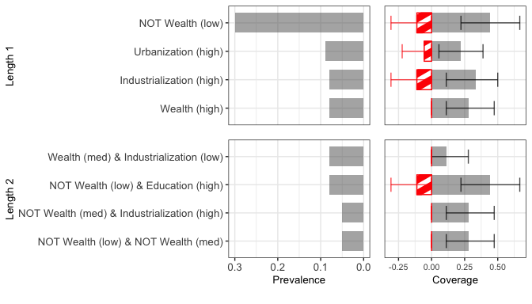
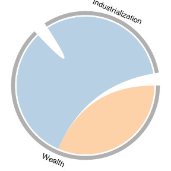
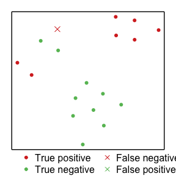

brs: Bayesian Rule Set
brs-vignette.RmdR package for Bayesian Rule Set: A Quantitative Alternative to Qualitative Comparative Analysis.
References:
- Chiu, Albert and Yiqing Xu. “Bayesian Rule Set: A Quantitative Alternative to Qualitative Comparative Analysis.” The Journal of Politics 85, no. 1 (2023):.
- Wang, Tong, Cynthia Rudin, Finale Doshi-Velez, Yimin Liu, Erica Klampfl, and Perry MacNeille. “A bayesian framework for learning rule sets for interpretable classification.” The Journal of Machine Learning Research 18, no. 1 (2017): 2357-2393.
R source files can be found on GitHub. R code used in this demonstration can also be downloaded from GitHub.
Installing {brs} and Python
{brs} is not currently on CRAN and thus must be installed from GitHub. This can be done using the following code:
#devtools::install_github("albert-chiu/brs"){brs} uses source code written in Python and requires, in addition to the package itself, an installation of Python. We recommend miniforge due to the variety of CPU architectures they support, which will hopefully preempt some incompatibility errors that would otherwise arise, although any installation that works will do.
Preliminaries
{brs} uses the reticulate package to run source code written in Python and requires a bit of setup. In our experience, we find that this process can vary depending on your hardware and software and may require some trouble-shooting.
# First create conda environment
# do this *before* loading the brs package. If you've already loaded brs or
# have been using reticulate, you may need to restart R and rerun your code
# in the order shown below
# Note: this code is for computers with Apple silicon (M1, etc.) and the
# corresponding miniforge installation
# install python and packages to environment
# note: this requires an Internet connection
reticulate::conda_install(envname = "~/miniforge3/envs/BRS_conda",
conda="~/miniforge3/condabin/conda", # path to conda binary
packages = c("numpy", "pandas", "scikit-learn", "scipy"))
#> + '/Users/albertchiu/miniforge3/bin/conda' 'install' '--yes' '--prefix' '/Users/albertchiu/miniforge3/envs/BRS_conda' '-c' 'conda-forge' 'numpy' 'pandas' 'scikit-learn' 'scipy'
reticulate::use_condaenv(condaenv="~/miniforge3/envs/BRS_conda")
# load brs package
library(brs)Running the BRS algorithm
The BRS algorithm requires a number of hyperparameters (see the above references). Our function has default values for all but maximum length of the rule. Other than that, you must supply the BRS function with a dataframe containing all explanatory variables and a separate outcome vector.
set.seed(123)
# load data for example
data("lipset_df", "lipset_Y")
# BRS without bootstrapping on entire sample
print(brs::BRS(df = lipset_df, Y = lipset_Y, seed = 123, maxLen=3L,
trainProp = 1, bootstrap = F))
#> $`Rule Sets`
#> $`Rule Sets`$`0`
#> $`Rule Sets`$`0`[[1]]
#> [1] "LITERACY_0_neg" "GNPCAP_0_neg"
#>
#>
#>
#> $Indices
#> named list()
#>
#> $Stats
#> accuracy tpr fpr
#> 1 NaN NaN NaNThe function will output a list with three entries. The first will be the rule sets themselves. If you do not bootstrap, then there will only be one rule set, which itself will be formatted as a list of vectors, where each vector corresponds to a rule. If you do bootstrap, the first return entry will be a list of lists. The second entry will be a list of indices of the observations used for each bootstrapped sample. Some other functions in our package will access these indices, but they will likely not be of much interest independent of this. If you do not bootstrap, the second entry will be empty. The third entry will be a dataframe of out-of-sample performance statistics. If you choose to use a train/test split (which is the default), the function will fit a rule set on the training set and then evaluate its accuracy, true positive rate (tpr), and false positive rate (fpr) on the test set. Otherwise, this will come back populated with NaNs.
# BRS without bootstrapping, with train/test split
print(brs::BRS(df = lipset_df, Y = lipset_Y, seed = 123, maxLen=3L,
bootstrap = F)) # default split is .7 training/.3 test
#> $`Rule Sets`
#> $`Rule Sets`$`0`
#> $`Rule Sets`$`0`[[1]]
#> [1] "INDLAB_1" "URBANIZA_0_neg" "GNPCAP_1_neg"
#>
#> $`Rule Sets`$`0`[[2]]
#> [1] "GNPCAP_0_neg" "URBANIZA_0"
#>
#>
#>
#> $Indices
#> named list()
#>
#> $Stats
#> accuracy tpr fpr
#> 1 0.6666667 0.5 0.25We can also bootstrap to obtain many rule sets. We will be using this for the remainder of this vignette.
# run BRS with default parameters
out_lipset <- brs::BRS(df = lipset_df, Y = lipset_Y, seed = 123,
maxLen=3L, bootstrap = T, reps=100L)
out_lipset[["Rule Sets"]][1:5 ]
#> $`0`
#> $`0`[[1]]
#> [1] "GNPCAP_1_neg" "LITERACY_0_neg" "GNPCAP_0_neg"
#>
#> $`0`[[2]]
#> [1] "INDLAB_1_neg" "GNPCAP_0_neg"
#>
#>
#> $`1`
#> $`1`[[1]]
#> [1] "GNPCAP_0_neg"
#>
#>
#> $`2`
#> $`2`[[1]]
#> [1] "LITERACY_0_neg" "GNPCAP_0_neg"
#>
#>
#> $`3`
#> $`3`[[1]]
#> [1] "URBANIZA_0_neg"
#>
#>
#> $`4`
#> $`4`[[1]]
#> [1] "INDLAB_1_neg" "LITERACY_0_neg" "GNPCAP_1"
#>
#> $`4`[[2]]
#> [1] "URBANIZA_0_neg"
out_lipset[["Indices"]][1:5 ]
#> $`0`
#> [1] 13 2 2 6 17 10 1 0 17 15 9 0 14 0 15 14 4 0
#>
#> $`1`
#> [1] 7 11 14 11 8 9 3 13 5 3 11 11 5 1 16 13 10 14
#>
#> $`2`
#> [1] 12 1 17 15 10 1 11 0 6 1 16 15 1 5 3 12 9 6
#>
#> $`3`
#> [1] 7 15 0 17 4 10 9 14 8 5 8 4 17 14 12 5 0 17
#>
#> $`4`
#> [1] 4 1 7 12 2 11 12 15 4 8 16 12 12 5 3 9 1 4
out_lipset[["Stats"]][1:5, ]
#> accuracy tpr fpr
#> 1 1 1 0
#> 2 1 1 0
#> 3 0.8333333 1 0.2
#> 4 0.5 0 0.25
#> 5 0.5 0.3333333 0.3333333Creating a bar graph
To visualize the bootstrapped rule sets, we recommend first making a bar graph. Before we create the graph, we need to create some objects to help our function label and simplify features. First, we need to create a dataframe with labels of your variables.
fdf <- cbind(colnames(lipset_df),
c("Wealth (high)", "Wealth (med)", "Wealth (low)",
"Urbanization (high)", "Urbanization (low)",
"Education (high)", "Education (low)",
"Industrialization (high)", "Industrialization (low)"))
# a low effort stopgap is to use the variable names as they appear in your data:
# fdf <- cbind(colnames(lipset_df), colnames(lipset_df))Next, optionally you can simplify features that are equivalent by defining equivalence classes. You can skip this set (and set the simplify argument of the plot_bar function to FALSE) if you find it to burdensome, but we recommend that you do this if you are at a more serious stage in the research process.
For example, if you have a binary variable \(X\), you can change all rules with ‘not \(X\)=0’ to ‘\(X\)=1’ and all rules with ‘not \(X=1\)’ to ‘\(X=0\).’ To do this, you need two objects: a list of (vectors of) variable names oppind and a matrix of values oppmat. The \(i\)th index oppind corresponds to the \(i\)th row of oppmat. oppmat will have two columns, each containing one of the two possible values of the binary variables in the respective entry of oppind.
For our democracy example, there are three binary variables (and no other variables) for which we would like to create equivalence classes:
# create
#oppind <- list(unique(unlist(lapply(colnames(lipset_df),
#function(x) strsplit(x, "_")[[1]][[1]])))[2:4])
oppind <- list(c("URBANIZA", "LITERACY", "INDLAB"))Each of these variables can take on either the value 0 or 1.
We could have more possible duos of values, e.g., for a variable like GNPCAP with three possible values, ‘low,’ ‘med,’ and ‘high,’ if we create overlapping binary categories ‘low,’ ‘medium or high,’ and ‘high’ (which in this example we did not), another duo might be ‘low’ and ‘medium or high.’ This would require its own row of oppmat and entry in oppind. If we also have a ‘low or medium’ category, this would require a separate entry. For example:
oppind_lmh <- list(c("GNPCAP"),
c("GNPCAP"))
oppmat_lmh <- rbind(c("low", "med_or_high"),
c("low_or_med", "high"))
print(oppind_lmh)
#> [[1]]
#> [1] "GNPCAP"
#>
#> [[2]]
#> [1] "GNPCAP"
print(oppmat_lmh)
#> [,1] [,2]
#> [1,] "low" "med_or_high"
#> [2,] "low_or_med" "high"Finally, we can make our barplot (see documentation for more thurough explanation of each argument, as well as their default values):
lipset_bar <- brs::plot_bar(df = lipset_df, Y=lipset_Y, fit = out_lipset,
featureLabels = fdf, maxLen=3, boot_rep = 100L,
minProp = .05, # rules must appear in at least 5% of bootstraps
topRules=5, # plot at most the top five rules of each length
simplify = T, oppmat=oppmat, oppind=oppind,
and =" & ", # how to display the 'and' operator
plotBuffer = c(.25, 0, .4), # white spacing around plot
titleSize=10, rule_text_size = 10, number_size = 10) # visual parameters
print(lipset_bar)
Making a chord diagram
To visualize the interactions present in a single rule set, we recommend using a chord diagram. This could either be the rule set you found without bootstrapping, or the aggregated rule set with bootstrapping. We plot the latter (though in this example they are the same). Note that this graph is agnostic to how you obtain the rule set, meaning it can also be used with QCA or any other method.
To plot the chord diagram, we also need to create a dataframe that maps the variable names as they appear in our data (first column) to the variable names as we want them to appear in our graph (second column).
# Feature names (without values) as they appear in X and their corresponding labels
fgs <- cbind(unique(unlist(lapply(colnames(lipset_df), function(x) strsplit(x, "_")[[1]][[1]]))),
c("Wealth", "Urbanization", "Education", "Industrialization"))
fgs
#> [,1] [,2]
#> [1,] "GNPCAP" "Wealth"
#> [2,] "URBANIZA" "Urbanization"
#> [3,] "LITERACY" "Education"
#> [4,] "INDLAB" "Industrialization"We then obtain and plot the aggregated rule set.
# get aggregated rule set
ruleset <- brs::agg_BRS(fit = out_lipset, X = lipset_df, Y=lipset_Y, maxLen=3)
plot_chord(ruleSet=ruleset, featureGroups=fgs,
#linkColors=RColorBrewer::brewer.pal(11, "RdGy")[c(8,10)],
linkColors=RColorBrewer::brewer.pal(9, "Set3")[c(6,5)],
gridColors = "grey",
textSize = 1, side_mar=0, top_mar=0)
Making a t-SNE plot
Finally, we make the t-SNE plot to help visualize the raw data itself in a low dimensional way. As we recomend in the accompanying reference paper to this package, we only use the variables that are included in the final (aggregated) rule set.
set.seed(123)
plot_tsne(X = lipset_df, Y = lipset_Y, ruleSet=ruleset,
pointSize = 1.25, symb = c(20, 4),
caseColors=RColorBrewer::brewer.pal(11, "RdYlGn")[c(2,9)])